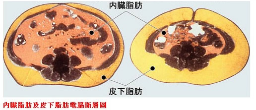

一、型號：目前本公司使用歐姆龍HBF-701體重體脂肪計。
二、測量原理：身體是由骨骼、肌肉、脂肪、水分等成分組成，脂肪是身體能量的來源之ㄧ，而體脂肪計的測量是利用生物阻抗分析法利用脂肪與水分導電率不同的原理，測量時流動於人體的電流非常微弱 (50kHz、500微安培)，藉由量測人體電阻，配合內建的性別、身高、體重、年齡計算因子，來推估脂肪在身體中所佔的百分比並以最適於測量體組成的方法與測量裝置分別收集基礎數據，製作成體組成推估公式。
| |
(一)、體脂肪率：水中秤重法(根據阿基米德原理設計，讓受測者潛入水中作最大呼氣後測量體重，以身體密度推估體脂肪)。
(二)、基礎代謝率：呼出氣體分析裝置(分析人體呼吸之空氣成分的裝置，可測量人體安靜時呼出氣體中的氧氣消耗量，藉以計算基礎代謝率)。
(三)、內臟脂肪基準：X光CT裝置來計算(計算內臟脂肪的面積)。
(四)、皮下脂肪率、骨骼肌率：雙能量X光吸收法及磁振造影儀算出。 |
以體脂計量測體脂肪時，因身體水分變化、喝太多水、飲酒、排尿、進食、服用藥物、運動狀況等情況，都可能造成電阻改變而錯估體脂肪。
| 三、測量方法： |
| |
(一)、正確測量姿勢：
1、赤腳站上體脂機
2、將背部與膝蓋伸直
3、將雙手水平抬起，並將手肘伸直
4、讓手臂與身體呈90度
5、面向操作顯示部位
(二)、電擊握把的握桿方式：
1、以食指扣住電擊握把下方內側的凹陷處
2、用整個手掌握住電擊握把 |
|
| |
(三)、建議測量時間：身體掃描器所測量的人體電阻值會受到電流流通部位的水分含量影響。而體內水分含量較為穩定的時段為『起床後』與『飯後2小時以上』。
(四)、不建議測量的人：
1、罹患感冒等症狀而正在發燒中的人
2、孕婦
3、水腫症狀者
4、專業健身或運動人士以及具有類似性質的人
5、透析患者 |
|
|
| |
(五)、禁止測量的人：
1、使用心律調節器等相關體內植入型醫療用電子儀器。
2、人工心肺等相關之維持生命用醫療電子儀器。
3、心電圖等相關之相關之裝置型醫療用電子儀器。 |
|
| BMI範圍（kg／m2） |
體型 |
| BMI＜18.5 |
消瘦 |
| 18.5≦BMI≦23.9 |
正常 |
| 24.0≦BMI≦26.9 |
過量 |
| 27≦BMI≦29.9 |
輕度肥胖 |
| 30≦BMI≦34.9 |
中度肥胖 |
| BMI ≧35.0 |
重度肥胖 |
資料來源：衛生福利部健康九九網站 |
| 四、功能介紹： |
|
| |
(一)、測量BMI(身體質量指數)：BMI指數在27以上即判定為肥胖。研究顯示，過重或是肥胖(BMI數值過高)的人，罹患糖尿病、高血壓、代謝症候群、骨性關節炎、乳癌、大腸癌等慢性疾病的風險與死亡率比健康體重的人要高。 而測量BMI可簡單衡量肥胖程度，但仍有所謂的『隱藏的胖子』無法由BMI判斷得知。隱性肥胖可能肇因於內臟脂肪的堆積，因此BMI指數屬於正常範圍也不能掉以輕心。 |
|
|
| |
(二)、體脂肪率：體脂肪依其分佈於體內的位置分為皮下脂肪與內臟脂肪。 |
|
| |
 |
| 年齡與性別 |
肥胖之判斷標準 |
| 30歲以上 |
| 男性 |
≧25％ |
| 女性 |
≧30％ |
| 30歲以下 |
| 男性 |
≧20％ |
| 女性 |
≧25％ |
資料來源：衛生福利部健康九九網站 |
|
| |
1、內臟脂肪：內臟脂肪是人體脂肪的一種，主要存在於腹腔內。內臟脂肪過多較易產生代謝性疾病或心血管疾病。
2、皮下脂肪：是貯存於皮下的脂肪組織，皮下脂肪主要的作用有儲存能量和維持體溫的作用。皮下脂肪容易堆積於腹部、臀部、上臂、大腿等，而皮下脂肪過多將導致體態失調。而本機雖未提供皮下脂肪判讀，但有提供同年齡層比較(同年齡平均值未必代表健康或正確的瘦身標準，只是依統計數據來做比較判讀)。 |
|
| 內臟脂肪基準 |
判定 |
| 1~未滿10 |
標準 |
| 10~14 |
略高 |
| 15以上 |
高 |
資料來源：歐姆龍使用說明書 |
| |
|
| |
(三)、骨骼肌率：肌肉大致分為分為骨骼肌、心肌、平滑肌，人們鍛練和運動，主要依靠骨骼肌，而骨骼肌的增加，可提高基礎代謝率。
(四)、基礎代謝率：基礎代謝就是指維持生命活動〈呼吸 、心臟跳動、維持體溫等〉必須使用的能量。人的基礎代謝率會隨著年齡增加而降低，而骨骼肌的減少也是主因之一。通常一天的總消耗能量中，基礎代謝量約佔70%、消耗於日常活動佔20%、食物熱效應作用消耗10%。基礎代謝取決於每個人肌肉量的多寡。所以雖然體重相同，但是體脂肪較少、肌肉量多的人基礎代謝較高，被消耗的能量也相對較高。鍛練肌肉可以提高基礎代謝率。除此之外，一般來說肌肉量多，基礎代謝高的人也有較不易發胖的傾向。
(五)、以身體年齡進行整體判斷：身體年齡是將身體狀況以基礎代謝率換算而成的年齡。由於基礎代謝率是彙整體重 、體脂肪率、骨骼肌率等數值計算而成的結果，因此可以藉以判斷身體年齡與實際年齡的差距。
(六)、各部位與同年齡層比較結果：與同年齡層比較結果是將您各部位皮下脂肪率及骨骼肌率測量值與相同體格、相同性別、年齡者加以比較，判斷您屬於何種基準。(但平均值並未代表健康或正確的瘦身標準)。 |
|
| 體脂肪計所測量之結果及分析方法，可協助您掌握身體狀況，但不具有診斷意義。 |
| |
資料來源
1、消費者文教基金會
2、物理報告─體脂計
3、衛生福利部國民健康署 肥胖防治網
4、健康管理：就從買對體脂計開始
5、健康百科
6、瑞安診所
7、減重原則與外食技巧─衛生福利部基隆醫院
8、歐姆龍HBF-362使用說明書 |